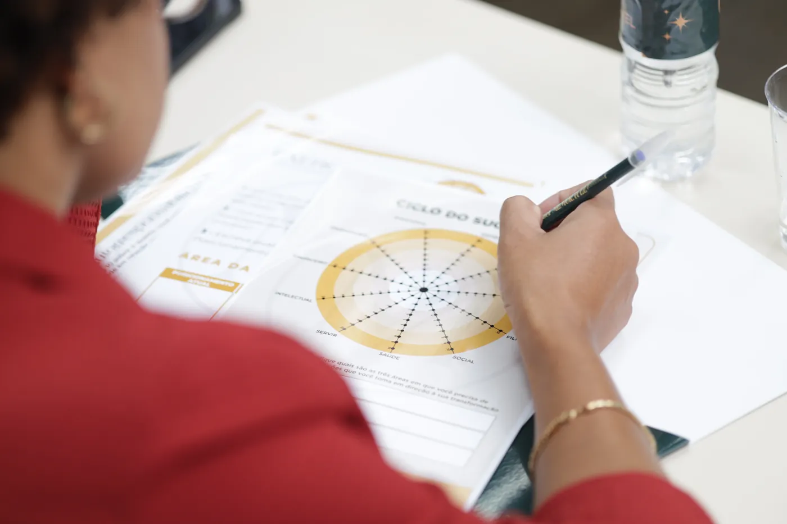

Mapeamento de Perfil Comportamental
Mapeamento de Perfil Comportamental
Descubra quem você é
de verdade e pare de
viver no automático
Entenda como você pensa, sente, decide e se relaciona, e receba um plano de ação com a leitura da Vivi Marques.
57 páginas e 1h30 com a Vivi
Perfil DISCDISC
Ouça a Vivi explicar
o que esse mapa revela
Em poucos minutos ela mostra o que você recebe, como é a devolutiva e de que forma esse olhar muda a maneira como você faz as suas escolhas.
Você já se perguntou
por que reage assim?
Toque nas frases que parecem com o seu momento. Só você vê as suas respostas, e nada sai desta página.
Um espelho do seu jeito
de ser e agir
O Mapeamento de Perfil Comportamental é uma análise completa da sua personalidade. Você responde a um questionário online na ferramenta CIS, em cerca de 20 minutos, e recebe um relatório personalizado que mostra como você age naturalmente e como tem se adaptado ao que os ambientes por onde passa pedem de você.
A base é a metodologia DISC, que organiza o comportamento humano em quatro estilos. Todo mundo tem um pouco de cada um, e o que muda é a intensidade com que cada estilo aparece na sua vida. Passe o cursor ou toque nas letras da roda para conhecer cada um deles.
Ninguém vai colocar você numa caixinha. O relatório mostra o seu estilo natural, que revela quem você é, e o seu estilo adaptado, que mostra como você tem se ajustado ao ambiente. Olhando para os dois lado a lado, fica claro onde você gasta energia demais e por onde vale a pena evoluir.
Os quatro estilos
Passe o cursor ou toque em uma letra para ver como cada estilo aparece no seu dia a dia.
Cerca de 57 páginas
sobre você
Cada parte do relatório responde a uma pergunta que você provavelmente já se fez em algum momento da vida.

-
01
Parte 1 de 10
A intensidade do seu perfil DISC
Quanto de cada estilo existe em você, no seu jeito natural e no jeito que você adaptou para o dia a dia.
-
02
Parte 2 de 10
Positividade, estima e flexibilidade
Como você enxerga a si mesmo e o quanto consegue se ajustar quando as coisas mudam.
-
03
Parte 3 de 10
Desafios, relações e decisões
O jeito como você costuma lidar com os problemas, com as pessoas e com as escolhas de cada dia.
-
04
Parte 4 de 10
Potencialidades e pontos a desenvolver
O que já é força em você e o que merece a sua atenção para você crescer com mais leveza.
-
05
Parte 5 de 10
Tipos psicológicos
A sua forma de perceber o mundo e de tomar decisões, com base nos estudos de Carl G. Jung.
-
06
Parte 6 de 10
Valores e motivadores
O que realmente move você, e por que algumas metas dão vontade de levantar cedo enquanto outras só pesam.
-
07
Parte 7 de 10
Estilo de liderança
Como você conduz pessoas e projetos, mesmo quando não ocupa um cargo de liderança.
-
08
Parte 8 de 10
Mapa de competências
As habilidades que aparecem com mais naturalidade no seu jeito de trabalhar e de se relacionar.
-
09
Parte 9 de 10
Comunicação com outros perfis
Sugestões práticas para conversar melhor com quem funciona de um jeito diferente do seu.
-
10
Parte 10 de 10
Plano de ação
Os próximos passos para transformar tudo o que você descobriu em atitudes reais na sua rotina.
Para quem quer se entender
e seguir com direção
Autoconhecimento
Para quem quer entender as próprias reações, os próprios limites e aquilo que faz bem de verdade.
Carreira
Para quem está em transição ou em dúvida sobre a área e a função que combinam com o próprio perfil.
Liderança
Para líderes e empreendedores que querem conhecer o próprio estilo e se comunicar melhor com a equipe.
Relacionamentos
Para quem quer conversas mais leves e menos conflitos em casa, no trabalho e na vida a dois.
Se você leu o livro Growth Mindset ou já participa da comunidade e da mentoria, o mapeamento aprofunda aquilo que você começou a enxergar sobre si mesmo.
Do primeiro clique até a
conversa com a Vivi
Tudo acontece online e no seu tempo, e a devolutiva é marcada de acordo com a sua agenda e a da Vivi.
Garanta o seu mapeamento
Você conclui a compra em ambiente seguro e a equipe da Vivi entra em contato com você.
Pagamento onlineResponda à avaliação
O link chega pelo WhatsApp e você responde ao questionário num momento tranquilo.
Cerca de 20 minutosReceba o seu relatório
Um material personalizado, feito a partir das suas respostas, com cerca de 57 páginas.
Relatório em PDFConheça o seu plano
O relatório termina com passos práticos para a sua vida pessoal, as suas relações e a sua carreira.
Plano de açãoConverse com a Vivi
Na devolutiva, ela explica o seu resultado e mostra como colocar o plano em prática.
1h30 pelo Zoom

Especialista em comportamento humano
Vivi Marques
Psicopedagoga especialista em comportamento humano, a Vivi tem formação em Análise Comportamental Aplicada, Educação Inclusiva com ênfase em neurociência, Psicopedagogia Clínica e Institucional, Gestão e Orientação Educacional e Pedagogia.
Diplomata, escritora e empresária, ela é autora do livro Growth Mindset e há mais de 12 anos ajuda pessoas a entenderem como funcionam para fazerem escolhas mais conscientes, no Brasil e fora dele. Na sua devolutiva, ela lê o relatório com você, traduz cada parte para a sua realidade e ajuda você a sair da conversa sabendo qual é o próximo passo.
- Pedagogia
- Psicopedagogia
- Análise Comportamental Aplicada
- Neurociência
O que muda depois do mapeamento
[DEPOIMENTO 1]
[DEPOIMENTO 2]
Tudo o que você recebe
para se conhecer
Pense no quanto custa continuar tomando decisões importantes sem entender o que move você. O mapeamento acompanha você em cada nova escolha que vier pela frente.
O que está incluso
- Avaliação onlineQuestionário de cerca de 20 minutos, respondido no seu ritmo.
- Relatório personalizadoCerca de 57 páginas em PDF sobre o seu perfil.
- Plano de açãoPassos práticos para a vida pessoal, as relações e a carreira.
- Devolutiva com a ViviCerca de 1h30 online, pelo Zoom, para entender cada parte do resultado.
Mapeamento + devolutiva
Comece hoje a se conhecer de verdade
ou R$ 00,00 à vista
Garantir meu mapeamentoMora em Portugal? O investimento é de € 00,00. Fale com a equipe pelo WhatsApp para receber o link de pagamento.
Antes de você começar
Cerca de 20 minutos. A avaliação é online, e você pode responder pelo celular ou pelo computador, num momento tranquilo do seu dia.
A equipe da Vivi envia o link pelo WhatsApp. É só abrir, responder com sinceridade e aguardar o contato para o próximo passo.
Assim que você responde ao questionário, a equipe entra em contato para agendar a devolutiva de acordo com a sua agenda e a da Vivi. Nesse encontro de cerca de 1h30, pelo Zoom, ela apresenta o seu relatório e explica cada parte com você.
Os testes gratuitos costumam entregar um rótulo e param por aí. O mapeamento traz um relatório de cerca de 57 páginas, um plano de ação e a leitura da Vivi numa conversa individual, para você saber exatamente o que fazer com o resultado.
Pelo contrário. O relatório mostra o seu estilo natural e o seu estilo adaptado, ou seja, quem você é e como tem se ajustado ao ambiente. Com essa leitura, ficam claros os caminhos que você pode seguir para evoluir.
A avaliação usa a metodologia DISC, tem como base os tipos psicológicos de Carl G. Jung e é aplicada por uma especialista em comportamento humano, com formação em Análise Comportamental Aplicada e neurociência.
As suas respostas e o seu relatório são confidenciais e usados apenas para a sua análise.
Não. O mapeamento é uma ferramenta de autoconhecimento e de desenvolvimento pessoal e profissional, e não substitui acompanhamento psicológico ou médico.
Pode, porque tudo acontece online. Para quem mora em Portugal, o investimento é de € 00,00, e a equipe envia o link de pagamento pelo WhatsApp.
Você pode pagar à vista por Pix ou boleto, ou parcelar no cartão em até 12x de R$ 00,00. O pagamento é processado com segurança pela TheBank.
Comece a usar a sua essência
a seu favor
Responda à avaliação no seu tempo, receba o seu relatório e converse com a Vivi sobre tudo o que ele revela. A clareza que você procura pode estar mais perto do que parece.